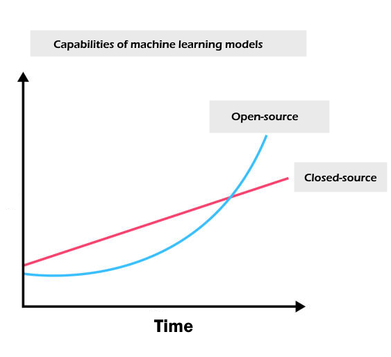
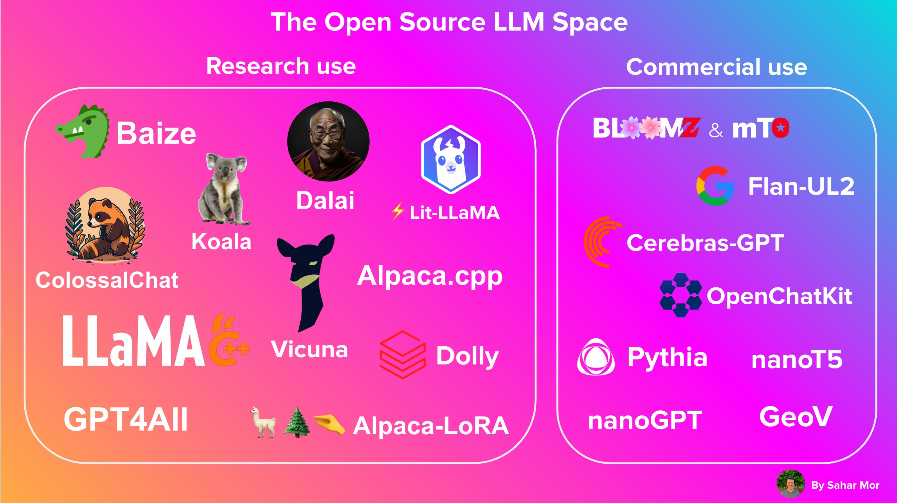
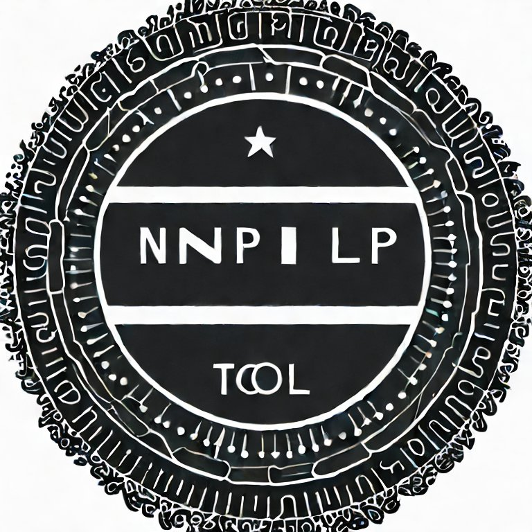

# imports and json files parsing skipped
# see data.preprocess_data.combine_json_to_dataframe.py
# Combine the data from the three JSON files
data = {**fn_data, **epi_data, **ar_data}
# Convert the data to a dataframe
df = pd.DataFrame.from_dict(data, orient='index')
# Add a new column with the concatenated text
df['full_text'] = ('Recipe title: ' +
df['title'] +
'. Ingredients: ' +
df['ingredients'].apply(lambda x: '; '.join(x)) +
'. Instructions: ' +
df['instructions'])
df = (df.
# remove adds
pipe(remove_advertisement).
# drop the picture_link column
drop(['picture_link'], axis = 1).
# give a num_words estimation
assign(num_words = lambda d: d['full_text'].str.split().str.len()).
# drop short articles
loc[lambda d: d['num_words'] > num_words_cutoff]
)Going far with open source tools in NLP
Krum Arnaudov, Data Scientist at Financial Times, 2023
About me
- Joined Financial Times as Data Scientist in 2021
- Past jobs as DS at Amplify Analytics, before that Account & Ops Management at HPI
- ML knowledge largely self-taught via free online content + the AI specialisation at the SoftUni.
- Main hobbies: my kids, some music, local politics
Topic today
- Work with a NLP dataset.
- Discuss central practical NLP concepts.
- Build a small app.
Value in NLP can be created with Open Source Tools.
Small scale is fine.
Search is more important than chat. Still.
Why do I strongly dislike closed source
- Not the spirit of ML.
- Not the spirit of SW.
- Danger of knowledge
Also

Source: https://twitter.com/julien_c/status/1648738233696632832/photo/1
(Another) Revolution in NLP
- Generative foundational models - GPT-3.5/GPT-4, BARD, LlaMa
- Focus on text generation/human interactions
- Semantic search
- Vector storage / VectorDBs - Pinecone, Weaviate, ChromaDB, etc…
- Amazing open source tools - Huggingface, LangChain…
What is a open source language model?
- Definition
- Open Source is a scale:
- Sentence Transformers are open source (Apache 2.0 License)
- Huggingface’s BLOOM is NOT open source
- But OpenAI’s GPT-3.5/4 is as closed source as it gets
- WTF is that - https://openai.com/policies
Open Source LLM Landscape
Source: https://twitter.com/theaievangelist/status/1645809824314298368/photo/1
Open Source vs. Propriatary
- ChatGPT is so cool!!!
- quasi-monopoly in text generation/interactions
- rates changes risk
- public to private knowledge (SOF)
Open Source vs. Propriatary
- Huggingface
- Academia
- The ML Community TM
Open?AI
My data, my kingdom.
Step 1 - Data
- Recipe Box dataset
- Example:
Data Preprocessing
Data Preprocessing
#| echo: true
# imports and json files parsing skipped
# see data.preprocess_data.combine_json_to_dataframe.py
# Combine the data from the three JSON files
data = {**fn_data, **epi_data, **ar_data}
# Convert the data to a dataframe
df = pd.DataFrame.from_dict(data, orient='index')
# Add a new column with the concatenated text
df['full_text'] = ('Recipe title: ' +
df['title'] +
'. Ingredients: ' +
df['ingredients'].apply(lambda x: '; '.join(x)) +
'. Instructions: ' +
df['instructions'])
df = (df.
# remove adds
pipe(remove_advertisement).
# drop the picture_link column
drop(['picture_link'], axis = 1).
# give a num_words estimation
assign(num_words = lambda d: d['full_text'].str.split().str.len()).
# drop short articles
loc[lambda d: d['num_words'] > num_words_cutoff]
)Step 2 - Document Embeddings
- What is a
document? - What is an
embedding?
Document Embeddings Goal
Find numerical representation of the documents such that semantically similar articles are close.
And semantically dissimilar articles - far.
Document representations

Document representations

Old School - Term frequency

Old School - Inverse Document Frequency

Old School - TF-IDF

Common Sparse Representation Issues
Frequently mentioned: - Lexical gap: UK, United Kingdom, England - Word order not preserved
Actual issues: - Requires a “vocabulary” of size (n_training docs, nr_tokens_retained) in memory e.g. (50 000, 100 000) - Huge vectors - tough for clustering tasks
Old School - TF-IDF
import numpy as np
from sklearn.feature_extraction.text import TfidfVectorizer
vectoriser = TfidfVectorizer(
stop_words='english', # default is without it, but this decreases the dictionary size significantly
min_df = 2, # Ignore terms that have a document frequency strictly lower than the given threshold. When float, proportion of docs.
max_df = 0.95, # ignore terms that have a document frequency strictly higher than the given threshold (corpus-specific stop words).
ngram_range=(1,2), # uni and bi-grams
max_features=30_000, # unigrams are ca. 22K, get top 8000 bigrams
dtype=np.float32 # Reduces the size of the resulting array without much quality sacrifice, default is float64
)
embeddings = vectoriser.fit_transform(recipe_data.full_text)Dense document representations
ndimensional representation- Find function
fsuch that semantically similar text is close
Source: Nils Reimers, Introduction to Dense Text Representations
What does semantically similar mean?

Based on: Nils Reimers, Introduction to Dense Text Representations
Sentence Transformers

Loss functions

SentenceTransformers - Triplet loss example
{'set':
{'query': 'What can I do to get better grades?',
'pos':
['How do I improve my grades?'],
'neg':
['Why do I get bad grades even though I study a lot?',
'How can I get better grades in maths?',
'How serious is forging high school grades?']
}
}
Nils Reimers, Introduction to Dense Text Representations
Sentence Transformers - Choices
A family of language models finetuned to produce document* embeddings
*Up to 512 tokens (ca. 400 words)
Choices - MTEB
Massive Text Embedding Benchmark (MTEB)

Sentence Transformers API
from sentence_transformers import SentenceTransformer
# download model
vectoriser = SentenceTransformer("all-MiniLM-L12-v2")
# ensure that the model vectorises up to 512 tokens
vectoriser.max_seq_length = 512
docs = [rec for rec in recipe_data.full_text]
embeddings = vectoriser.encode(docs, show_progress_bar=True)How do you know if you’ve done a good job?
Embeddings visualizations
- Reduce dimensions to 2 (UMAP seems to be the best option, TruncatedSVD for sparse data)
- Create an interactive plot:
- good options - altair, bokeh, plotly
Embeddings visualizations with Bulk
- Bulk - visualisation and initial data labelling in one.
- Works with images too!
Simple Semantic Search
Simple Semantic Search
Further know your dataset
Topic modelling with BERTopic
- BERTopic - like a lego for topic modelling
- Embrace modularity

- Fast, when you already have the embeddings

Topic modelling with BERTopic
vectoriser_model = CountVectorizer(stop_words="english")
hdbscan_model = HDBSCAN(min_cluster_size=10,
min_samples = 1, # This to reduce outliers as much as possible
cluster_selection_epsilon = 0.1, # Reduce number of clusters
metric='euclidean',
prediction_data=True)
sentence_model = SentenceTransformer("all-MiniLM-L12-v2")
sentence_model.max_seq_length = 512
representation_model = MaximalMarginalRelevance(diversity=0.2)
topic_model = BERTopic(
vectorizer_model=vectoriser_model,
hdbscan_model = hdbscan_model,
min_topic_size=20,
n_gram_range=(1, 2),
embedding_model=sentence_model,
representation_model=representation_model
)
topics, probs = topic_model.fit_transform(docs, embeddings)Topic modelling with BERTopic
Annotate your dataset
Some work - already done
- Use Bulk
- Use BERTopic
- Third option - annotation tools
Annotation
Any process of adding metadata tags to your text data can be called annotation.
Different examples of annotation:
- Text classification
- Named entities
- Entity linking
Annotation Tools
Pigeon - annotate in Jupyter
Few-shot learning with SetFit
Zero-shot vs. Few-shot learning


Source: GPT-3 paper https://arxiv.org/pdf/2005.14165.pdf
Few-shot learning with SetFit
Deploy
Streamlit - why do I love it?
Do your usual flow
Sprinkle some streamlit calls
- Love the docs & blog
Get your app.
Stakeholders and teammates love it!
Steamlit notes
Utilize caching - @st.cache_resource and @st.cache_data and wrap in functions
Scale
Indexing and vector stores
A note on LangChain
Summary
Q&A
SoftUni AI conference